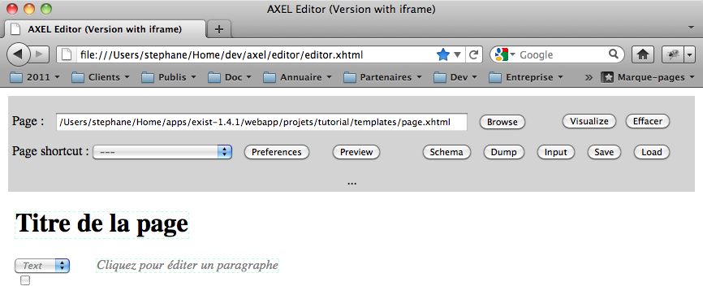
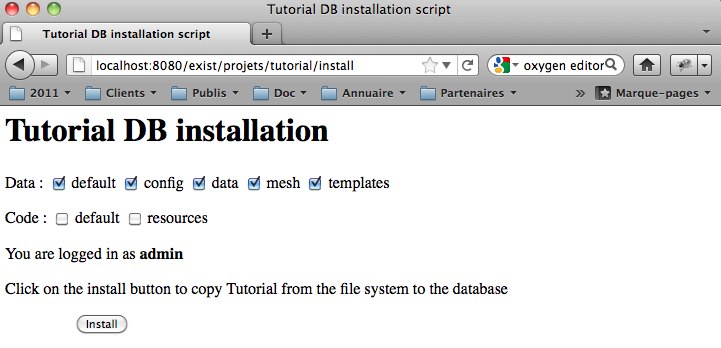

Test du gabarit du site “mesh/standard.html” avec Firefox
Par Stéphane Sire
Version du 10 novembre 2011
Ce document présente une méthode de travail à suivre pour créer des sites Web avec Oppidum. Il s’appuie sur l’application tutorial qui l’accompagne.
Le tutorial est un mini-site avec 1 page d’accueil /home éditable, et un catalogue /chapitres/{nb} dans lequel il est possible d’ajouter et de modifier des pages identifiées par un numéro.
Toutes les pages utilisent le même gabarit avec un lien vers l’accueil (sauf sur l’accueil), un lien Login/Logout et un menu vers les chapitres à droite. Le gabarit inclus également une zone pour afficher des erreurs et une zone pour afficher des message d’information.
Seul l’utilisateur admin, ou membre (mot de passe test) sont autorisés à modifier / ajouter des pages. Les pages utilisent toutes le même template XTiger XML qui permet de télécharger des images.
Le premier chapitre “Installation et lancement du tutorial” explique comment lancer le tutorial et donne quelques conseils sur l’environnement de développement. Les chapitres suivants expliquent pas à pas comment le tutorial a été créé. C’est la même démarche qu’il faut suivre pour créer un nouveau site Web avec Oppidum.
Vous devez installer eXist (version 1.4.1). Au cours de l’installation eXist vous demandera de choisir le répertoire où il créera le répertoire data contenant toute la base de données (vous pouvez laisser le choix par défaut). Il vous demandera également de fixer le mot de passe de l’utilisateur admin.
Attention si vous installez plusieurs BD eXist en même temps, ne mettez pas leurs base de données au même endroit, vous risquez ensuite d’avoir un message d’erreur lors du lancement d’eXist à propos de problèmes de locks.
Nous vous recommandons d’installer la distribution d’AXEL quelque part sur votre ordinateur pour mettre au point les templates XTiger XML. Celle-ci est disponible sur GitHub. Utilisez la commande git pour la récupérer:
git clone git://github.com/ssire/axel.git
ou bien récupérez directement une archive .ZIP à l’aide du bouton ZIP sur la page du projet sur GitHub si vous n’avez pas la commande Git et ne souhaitez pas l’installer.
Lorsque la distribution AXEL est installée, ouvrez le fichier editor/editor.xhtml dans Firefox. Suivez alors les instructions affichées pour modifier security.fileuri.strict_origin_policy et le mettre à false. Vous pourrez alors utiliser les boutons Browse, Save et Load pour choisir un fichier template XTiger XML à transformer dans l’éditeur, sauvegarder les données XML en cours d’édition dans un fichier et charger des données XML depuis un fichier dans l’éditeur (attention cette dernière fonction est à effectuer 1 seule fois après la transformation du template choisi en éditeur).
Par exemple essayez d’ouvrir le template templates\page.xhtml du tutorial (appuyez sur Visualize pour le transformer), vous devriez obtenir quelque chose comme la figure suivante :

Test du template “templates/page.xhtml” du tutorial avec l’éditeur d’AXEL
Pour les utilisateurs de Macintosh nous recommandons d’utiliser l’éditeur de texte TextMate (payant) ou à défaut TextWrangler (gratuit). Ces deux éditeurs sont très pratiques car ils permettent d’accéder à l’arborescence de l’ensemble d’un répertoire si celui-ci est ouvert par glisser-déposer de l’icone du répertoire sur celle de l’éditeur.
Pour TextMate il est possible d’installer un bundle XQuery qui reconnaît la syntaxe XQuery (très pratique). Le bundle est disponible par svn sur http://svn.textmate.org/trunk/Review/Bundles/XQuery.tmbundle/.
Pour l’installer vous pouvez exécuter dans le terminal :
cd ~/Library/Application\ Support/TextMate/
mkdir Bundles (ssi il n'existe pas)
cd Bundles
svn --username anon --password anon co "http://svn.textmate.org/trunk/Review/Bundles/XQuery.tmbundle/"
osascript -e 'tell app "TextMate" to reload bundles'
Ensuite il faut associer les fichiers XQuery (extensions .xql ou .xqm`) avec le bundle. Pour cela, lorsqu’un fichier XQuery est ouvert, associez le manuellement à l’aide du popup du bas de la fenêtre TextMate. Cette association sera valable pour tous les fichiers avec la même extension.
Il est également possible d’installer pour TextMate un plugin XMLMate qui offre une palette dans le menu Window qui peut servir à évaluer des XPath sur le fichier XML ouvert dans la fenêtre de premier plan. De même le plugin TeXSLMate offre une palette pour debugger les scripts XSLT / XQUery (mais sans les modules propres à eXist). Dans les deux cas double cliquez sur le fichier .plugin pour l’installer dans TextMate.
Sinon vous pouvez également utiliser l’éditeur Oxygen (payant). Dans ce cas nous vous recommandons également de suivre les instruction pour configurer une connection eXist qui vous permettra de voir directement le contenu de la BD dans l’éditeur Oxygen.
Installez eXist. Dans le répertoire webapp de eXist créez un répertoire projets. Dans le répertoire projet, placez le répertoire oppidum de la distribution Oppidum, et placez à côté le répertoire tutorial de la distribution du tutorial. Si le répertoire où vous avez installé eXist s’appelle exist-1.4.1, vous devriez obtenir l’arborescence suivante :
$ ls -1 projets/
oppidum
tutorial
$ pwd
{...}/exist-1.4.1/webapp
Vous pouvez alors lancer eXist avec la procédure standard ou bien en exécutant le script start.sh qui se trouve dans le répertoire oppidum/scripts à l’aide du terminal :
$cd projets/oppidum/scripts/
$ ./start.sh
Starting eXist server with output redirected to 'server.log'
Vous pouvez alors accéder au tutorial avec l’URL :
http://localhost:8080/exist/projets/tutorial
lors du premier accès vous devriez obtenir une erreur indiquant que le mesh n’est pas dans la base de données. C’est parce qu’il faut d’abord installer les données initiales du site dans la BD (cf. ci-dessous).
L’intérêt d’installer Oppidum et le tutorial dans sous-répertoire projets est que cela vous permet d’accéder ensuite à l’aide d’eXist pendant le développement, en particuliers aux URLs suivantes très pratiques:
http://localhost:8080/exist (documentation)
http://localhost:8080/exist/sandbox (sandbox pour tester du code XQuery)
http://localhost:8080/exist/xquery/functions.xql (annuaire des fonctions XQuery)
Lorsque eXist est lancé, ouvrez l’URL suivante :
http://localhost:8080/exist/projets/tutorial/install
Il faudra alors vous identifier comme admin avec le mot de passe défini lors de l’installation de eXist.

Page d’installation du site tutorial
Dans la ligne Data : sélectionnez alors tous les modules (default, config, data, mesh et templates), puis cliquez sur le bouton Install. Vous devriez ensuite pouvoir utiliser normalement l’application tutorial.
Notez que la ressource /install est utilisable seulement en développement, elle doit être normalement désactivée en production.
Utilisez la procédure standard de eXist ou bien exécutez le script stop.sh qui se trouve dans le répertoire oppidum/scripts à l’aide du terminal. Dans ce deuxième cas pensez à éditer le fichier stop.sh de manière à placer le mot de passe que vous avez attribué à la BD eXist lors de l’installation, par ex. dans le cas suivant le mot de passe est test :
$ more stop.sh
echo "Shutting down eXist server"
../../../../bin/shutdown.sh -u admin -p test
Notez (idem pour le lancement) que les scripts start.sh et stop.sh ne fonctionnent que si Oppidum est installé dans un sous-répertoire (e.g. projets) du répertoire webdav.
Lorsque eXist est lancé vous pouvez accéder au contenu de la base de données de plusieures manières :
afficher le contenu de la BD en lecture seule avec le navigateur Web en ouvrant des URLs de la forme :
http://localhost:8080/exist/rest/db
utiliser le client Java d’administration de eXist
avec la connexion eXist dans l’éditeur Oxygen (cf. ci-dessus)
Les deux dernières méthodes permettent aussi de créer des collections et des ressources, et de modifier les droits d’accès.
Notez que la première méthode peut ne pas fonctionner si l’on a modifié la configuration de eXist pour empêcher l’accès au contenu de la BD, ce qui devrait être le cas en production.
La configuration du site est un ensemble de fichiers et de données qui se trouvent dans le répertoire de l’application et qui servent à initialiser la base de données du site pour qu’elle puisse fonctionner avec Oppidum.
Elle comporte les éléments suivants :
Tous ces éléments sont recopiés dans la base de données par un script d’installation.
Par convention créez un répertoire resources dans lequel vous placerez les ressources statiques du site dans des sous-répertoires, par exemple css ou lib (pour le code Javascript) ou images (pour les images utilisées dans les gabarits).
Le tutorial contient une unique ressource site.css placée dans le répertoire resources/css.
Le gabarit (ou mesh) est un fichier XHTML qui définit le présentation finale de une ou plusieurs pages du site incluant tous les éléments navigationnels et informatifs (chemin de navigation, menus, en-tête, pied de page, etc.).
Il peut exister un ou plusieurs gabarits pour un site Web (ex: un gabarit pour les pages standards et un gabarit pour les erreurs de page non trouvées). Le nom du fichier (sans le suffixe) correspond au nom de l’attribut @epilogue utilisé dans le mapping du site.
Le tutorial contient un unique gabarit standard.html dans le répertoire mesh. Ce fichier contient des éléments spéciaux dans l’espace de nommage xmlns:site="http://oppidoc.com/oppidum/site". Chaque site est libre de définir son propre vocabulaire.
Ouvrez directement le gabarit depuis le système de fichier dans votre navigateur sans lancer le serveur. Vous devriez voir quelque chose ressemblant à l’illustration suivante :
Test du gabarit du site “mesh/standard.html” avec Firefox
Lors du rendu du gabarit, chaque élément spécial est remplacé soit par le contenu correspondant de la vue transmise à l’épilogue (c-a-d le document <site:view>), soit par le résultat d’une fonction XQuery de même nom définie dans l’épilogue, soit supprimé.
Par exemple dans le gabarit standard.html du tutorial, le contenu de la page est généré par l’élément spécial <site:content> :
<div id="content">
<site:content>
<h1>Contenu</h1>
<p>Lore ipsum...</p>
</site:content>
</div>
Si la vue transmise à l’épilogue contient :
<site:view>
<site:content>
<p>Hello World</p>
</site:content>
</site:view>
La page rendue par l’épilogue contiendra :
<div id="content">
<p>Hello World</p>
</div>
Et si elle ne contient pas d’élément <site:content>, le résultat sera:
<div id="content">
</div>
Comme le montre l’illustration ci-dessus, il est permis de mettre du contenu HTML sous les éléments spéciaux du gabarit. Ceci est très pratique lors de l’intégration d’un site Web pour tester le gabarit en l’ouvrant directement dans un navigateur Web. Ce contenu ne sera pas repris par l’épilogue.
Ainsi le gabarit standard.html du tutorial contient un fragment <site:link> conçu pour inclure le fichier CSS du site :
<site:link force="true">
<link rel="stylesheet" href="../resources/css/site.css" type="text/css" charset="utf-8"/>
</site:link>
Le lien relatif vers le fichier CSS sert ici uniquement à tester le gabarit comme expliqué ci-dessus, puisqu’il ne sera pas recopié par l’épilogue.
L’attribut force="true" placé sur l’élément spécial du gabarit force l’appel de la méthode que la vue contienne ou non un fils de même nom.
Si vous parcourez le fichier epilogue.xql du tutorial, vous constaterez que la plupart des modules du gabarit sont en fait générés dynamiquement par des fonctions XQuery dans l’épilogue (c’est la cas du chemin de navigation Home, du lien LOGIN ou du menu Chapitres par ex).
Le gabarit du tutorial contient également des éléments div avec un attribut condition pour générer des boites pour afficher les messages d’erreur ou les messages d’informations créés par les méthodes oppidum:add-error et oppidum:add-error lors de l’exécution du pipeline.
Par exemple pour les messages d’erreur, le fragment :
<div id="error" condition="has-error">
<site:error force="true"/>
</div>
appelle la fonction site:error de l’épilogue quel que soit le contenu de la vue (attribut force="true"). Par contre la condition has-error n’insère la div que s’il y a des erreurs.
La configuration du site comprend également le texte des messages d’erreur dans un fichier XML conventionnellement appelé errors.xml et qui se trouve dans le répertoire init. Pour chaque type d’erreur, ce fichier comprend un enregistrement de la forme :
<error type="URI-NOT-FOUND" code="404">
<message lang="fr">La page demandée n'existe pas</message>
<message lang="en">Page does not exist</message>
</error>
Le tutorial n’ajoutant pas de type d’erreur supplémentaire à ceux définis par défaut par Oppidum, il n’a pas de fichier d’erreurs.
Vous pouvez également fournir des contenus initiaux pour les pages du site. Par convention nous recommandons de placer ces contenus dans un répertoire init. Dans le cas du tutorial celui-ci contient une seule page initiale home.xml.
Les templates sont par convention dans le répertoire templates.
Suivant les cas il se peut que vous deviez installer les templates dans la base de données pour pouvoir les utiliser en développement (en test et en production ils seront toujours dans la BD). Dans ce cas ils font partie de la configuration du site.
C’est le cas dans le tutorial où le seul template page.xhtml doit être servi après transormation par la transformation XSLT templates/filter.xsl. Le but de cette transformation est d’ajouter un paramètre photo_base qui sert à afficher les images téléchargées pendant l’édition, et dont l’URL dépend du contexte d’exécution de l’application (paramètre xslt.base-url).
Le script d’installation copie la configuration du site dans la BD. Par convention le script d’installation est un script XQuery appelé install.xql à placer dans le répertoire scripts. Ce script est invoqué par une ressource /install déclarée dans le mapping (cf. infra).
Le script d’installation du tutorial copie la configuration dans une collection mère /db/sites/tutorial dans la BD.
Notez que le script d’installation crée aussi le ou les premiers utilisateurs et met les droits d’accès sur les collections et les ressources de la BD.
Le script d’installation copie aussi le code de l’application dans une collection mère /db/www/tutorial, mais ce n’est pas nécessaire en développement où le code est exécuté depuis le répertoire sur disque de l’application.
Le script d’installation consiste en réalité en 1 seule ligne qui invoque une fonction fournie par Oppidum :
install:install("projets/tutorial", $policies, $site, $code, "Tutorial")
Le premier paramètre indique le chemin jusqu’au tutorial depuis le répertoire webapp de eXist.
La description des utilisateurs, des collection, des ressources à créer et des permissions associées s’effectue de manière déclarative dans les trois variables $policies, $site, $code dans le namespace "http://oppidoc.com/oppidum/install". Elle suit un syntaxe expliquée dans le guide d’Oppidum.
Le dernier paramètre est le titre de la fenêtre.
L’epilogue est le fichier epilogue.xql du tutorial. Chqaue application Oppidum doit définir un tel fichier à la racine.
L’epilogue contient une fonction récursive (local:render, à recopier toujours telle qu’elle) qui recopie les noeuds XHTML du gabarit et passe le contrôle à une fonction XQuery dès qu’elle rencontre un élément spécial dans l’espace de nom site:. Dans ce cas elle n’itère pas sur les fils de cet élément spécial. La fonction XQuery doit retourner un fragment HTML à inclure dans la page, éventuellement vide.
L’association entre les éléments spéciaux et les fonctions XQuery s’effectue dans la fonction d’aiguillage :
declare function site:branch( $cmd as element(), $source as element(), $view as element()* ) as node()*
La création de l’épilogue se résume à créer les fonctions de rendu associées avec chaque élément spécial du gabarit. Dans la suite de cette section nous reprenons brièvement les fonctions utilisées dans le tutorial. Chaque application est libre de définir les fonctions qui lui conviennent en fonction des gabarits qu’il utilisés.
Le tutorial définit une fonction site:link pour générer l’élément <site:link> du gabarit :
declare function site:link( $cmd as element(), $view as element() ) as element()*1
Cette fonction retourne un ou plusieurs liens CSS générés dynamiquement suivant la commande (donc la page courante). Elle utilise la fonction epilogue:css-link d’Oppidum pour intégrer des liens vers les fichiers CSS de la librairie AXEL ou jQuery fournies en standard avec Oppidum, ou bien vers les fichiers CSS contenus dans le répertoire resources du tutorial.
Le tutorial définit une fonction site:scripts semblable à la fonction site:link mais pour les scripts Javascript à inclure dans la page.
Cette fonction utilise la fonction epilogue:js-link d’Oppidum pour intégrer des liens vers la librairie AXEL ou jQuery fournies en standard avec Oppidum, ou bien vers les fichiers Javscript contenus dans les ressources du tutorial.
Le tutorial définit une fonction site:navigation pour générer l’élément <site:menu> du gabarit. Celle-ci interroge le contenu de la collection /db/sites/tutorials/chapters pour générer un lien vers chaque chapitre. Elle met également en gras le chapitre courant si la commande concerne une page de chapitre.
Le tutorial définit une fonction site:home pour générer l’élément <site:home> du gabarit. Celle-ci affiche un lien vers la page d’acueil si la commande concerne tout autre page.
Le tutorial définit une fonction site:login pour générer l’élément <site:login> du gabarit. Cette fonction gère l’affichage du lien Login ou Logout et du nom de l’utilisateur courant.
Le contrôleur principal du tutorial est le fichier controller.xql. Chaque application Oppidum doit définir un tel fichier à la racine.
En pratique le contrôleur se résume à une ligne :
gen:process($exist:root, $exist:prefix, $exist:controller, $exist:path,
'fr', true(), $access, $actions, $mapping)
Cette commande passe le contrôle à Oppidum avec les informations suffisantes pour analyser la requête du client (contenue dans les variables pré-définies d’aXist exist:root, exist:controller et exist:path) et générer en retour un pipeline.
L’architecture et une partie de la logique de l’application Web est transmise au contrôleur dans les variables $mapping, $actions et $access.
Ces variables décrivent respectivement :
La syntaxe XML de ces variables est définie dans le guide d’Oppidum.
Le plus simple est d’utiliser les attributs db, collection et resource du mapping pour faire pointer l’objet de référence de la commande sur la resource à afficher :
<site db="/db/sites/tutorial"...
<item name="home" collection="pages" resource="home.xml"...>
Utilisez ensuite le script XQuery oppidum:actions/read.xql comme modèle. Si la ressource contient directement le HTML à insérer dans la page vous pouvez également utiliser la transformation XSLT oppidum:views/dump.xsl :
<model src="oppidum:actions/read.xql"/>
<view src="oppidum:views/dump.xsl"/>
Si votre ressource doit-être convertie en HTML pour l’affichage, remplacez la transformation XSLT pour votre propre transformation. Il est d’usage de mettre celle-ci dans le répertoire views de votre application :
<view src="views/ma-transformation.xsl"/>
Si la resource que vous souhaitez afficher ainsi est désignée comme item anonyme de collection par l’URL, vous pouvez utiliser la même méthode que ci-dessus mais en utilisant la substitution d’URL dans la syntaxe de l’attribut resource. Par exemple si votre URL est de la forme chapitre/num où num sert à construire le nom du fichier contenant la resource en ajoutant le suffixe .xml, utilisez $2 (2e segment du chemin de l’URL) pour fabriquer le nom du fichier :
<site db="/db/sites/tutorial"...>
<collection name="chapitres" collection="chapitres"...>
<item resource="$2.xml"...>
et utilisez ensuite les mêmes types de pipeline que ci-dessus pour afficher la ressource.
A MIGRER DANS LE GUIDE OPPIDUM
Vous pouvez également remplacer le script XQuery servant de modèle par votre propre script. Dans ce cas la méthode path-to-ref du module http://oppidoc.com/oppiudm/util renvoie dans une chaine de caractère le chemin d’accès à l’objet de référence de la requête, et la méthode path-to-ref-col une référence à sa collection :
let $doc-uri := oppidum:path-to-ref()
let $col-uri := oppidum:path-to-ref-col()
À faire
À faire
À faire
Le packaging consiste à créer une archive .ZIP contenant à la fois la configuration et le code de l’application.
C’est cette archvive qui sera restorée dans la base de donnée pour installer l’application sous Tomcat en test ou en production.
A EXPLIQUER
En production penser à désactiver l’accès au contenu de la BD par le ExistServlet.